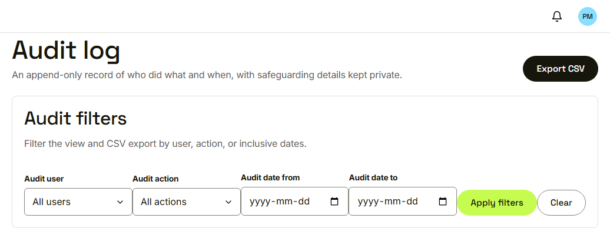
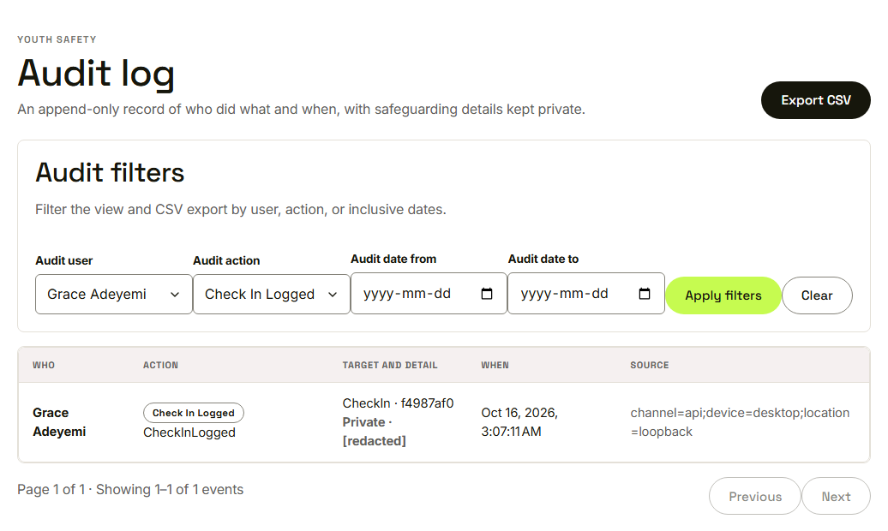
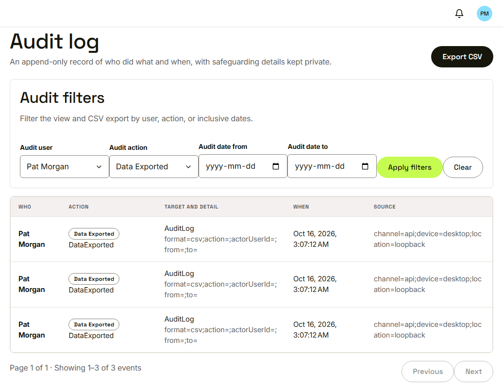
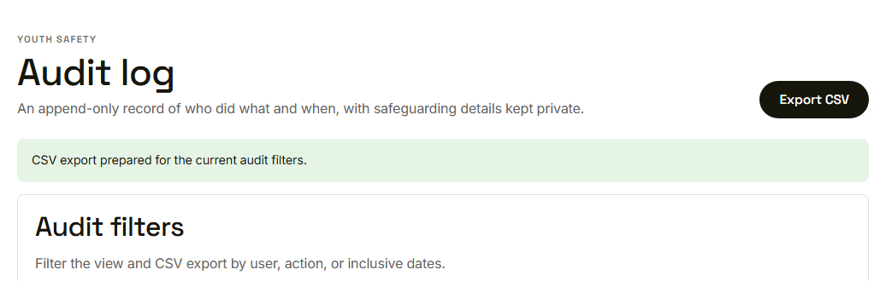

Waypoint · Video 077
Inspecting and exporting the audit log
Who did what, and when
The audit log

An append-only record with filters
A private check-in, redacted

The note content is never shown
Filter by user and action

Three events, page one of one
Export CSV

The export is logged too
Things to remember
Only program administrators see it
Filter by user, action and date; ten rows a page
Private note content is redacted
Export gives a CSV, and the export is logged